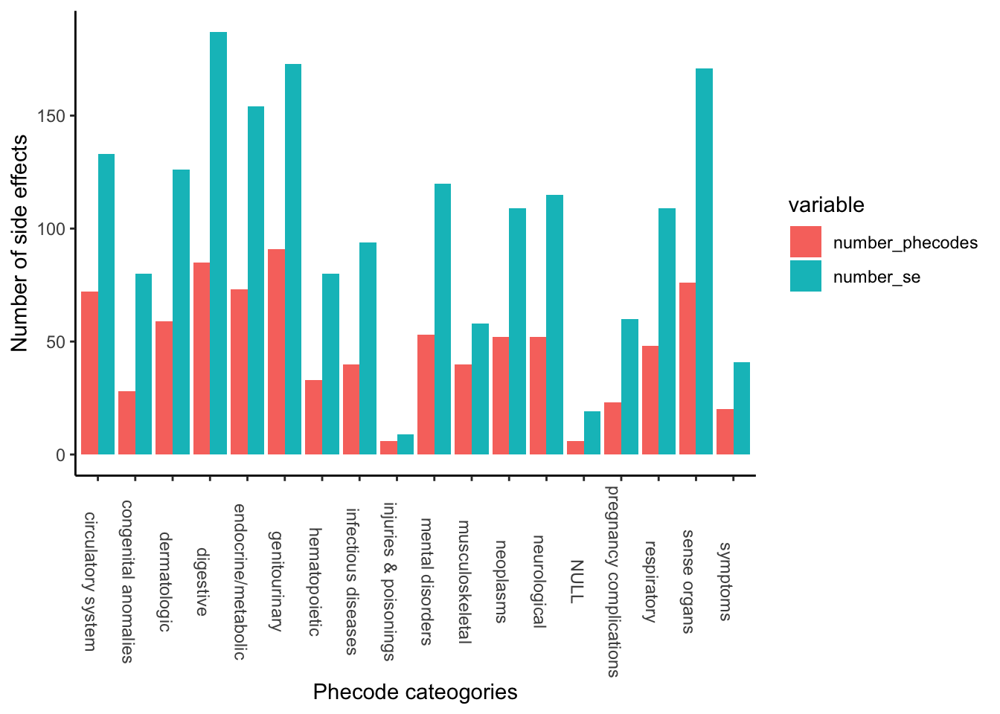

Main Indications
[1] "5876 unique drugs with 2628 unique main indications" Min. 1st Qu. Median Mean 3rd Qu. Max.
1.00 2.00 6.00 17.16 16.00 767.00
| Version | Author | Date |
|---|---|---|
| 99f9cc1 | AineDuffy | 2020-04-21 |
Last updated: 2020-06-24
Checks: 7 0
Knit directory: DG_WF/
This reproducible R Markdown analysis was created with workflowr (version 1.6.2). The Checks tab describes the reproducibility checks that were applied when the results were created. The Past versions tab lists the development history.
Great! Since the R Markdown file has been committed to the Git repository, you know the exact version of the code that produced these results.
Great job! The global environment was empty. Objects defined in the global environment can affect the analysis in your R Markdown file in unknown ways. For reproduciblity it’s best to always run the code in an empty environment.
The command set.seed(20200414) was run prior to running the code in the R Markdown file. Setting a seed ensures that any results that rely on randomness, e.g. subsampling or permutations, are reproducible.
Great job! Recording the operating system, R version, and package versions is critical for reproducibility.
Nice! There were no cached chunks for this analysis, so you can be confident that you successfully produced the results during this run.
Great job! Using relative paths to the files within your workflowr project makes it easier to run your code on other machines.
Great! You are using Git for version control. Tracking code development and connecting the code version to the results is critical for reproducibility.
The results in this page were generated with repository version eabc3a8. See the Past versions tab to see a history of the changes made to the R Markdown and HTML files.
Note that you need to be careful to ensure that all relevant files for the analysis have been committed to Git prior to generating the results (you can use wflow_publish or wflow_git_commit). workflowr only checks the R Markdown file, but you know if there are other scripts or data files that it depends on. Below is the status of the Git repository when the results were generated:
Ignored files:
Ignored: .DS_Store
Ignored: analysis/.DS_Store
Untracked files:
Untracked: analysis/Maketable_sider2_updated.r
Untracked: analysis/siderdata_v4.Rmd
Note that any generated files, e.g. HTML, png, CSS, etc., are not included in this status report because it is ok for generated content to have uncommitted changes.
These are the previous versions of the repository in which changes were made to the R Markdown (analysis/siderdata_intial.Rmd) and HTML (docs/siderdata_intial.html) files. If you’ve configured a remote Git repository (see ?wflow_git_remote), click on the hyperlinks in the table below to view the files as they were in that past version.
| File | Version | Author | Date | Message |
|---|---|---|---|---|
| Rmd | eabc3a8 | AineDuffy | 2020-06-24 | Re ran and included SE label and SE medra |
| html | 40238da | AineDuffy | 2020-04-21 | Build site. |
| Rmd | 3a6ccba | AineDuffy | 2020-04-21 | Check different se filters at 10% and remove matching mi=se(using |
| html | cf119dd | AineDuffy | 2020-04-21 | Build site. |
| html | c3f89bc | AineDuffy | 2020-04-21 | Build site. |
| Rmd | 5e3d584 | AineDuffy | 2020-04-21 | Check different se filters at 10% and remove matching mi |
| html | 99f9cc1 | AineDuffy | 2020-04-21 | Build site. |
| Rmd | 63321db | AineDuffy | 2020-04-21 | Check different se filters at 10% and remove matching mi |
| html | 81e8bff | AineDuffy | 2020-04-14 | Build site. |
| html | 6378ce1 | AineDuffy | 2020-04-14 | Build site. |
| Rmd | e4a202c | AineDuffy | 2020-04-14 | Added correlation matrix for se v adr score |
| html | b16fdb3 | AineDuffy | 2020-04-14 | Build site. |
| Rmd | 1104233 | AineDuffy | 2020-04-14 | Trying to publish to github |
| html | a38031f | AineDuffy | 2020-04-14 | Build site. |
| Rmd | 8741f86 | AineDuffy | 2020-04-14 | Adding info, tables and plots for se, adr, icd, phecodes and entrez id |
| html | 372bf3b | AineDuffy | 2020-04-14 | Build site. |
| Rmd | a934316 | AineDuffy | 2020-04-14 | Adding info, tables and plots for se, adr, icd, phecodes and entrez id |
| html | a047ac4 | AineDuffy | 2020-04-14 | Build site. |
| Rmd | c23cce6 | AineDuffy | 2020-04-14 | Adding info, tables and plots for se, adr, icd, phecodes and entrez id |
| html | 8a4d56d | AineDuffy | 2020-04-14 | Build site. |
| Rmd | 28ff552 | AineDuffy | 2020-04-14 | Adding info, tables and plots for se, adr, icd, phecodes and entrez id |
####run with sider 4. Only did sider 2 becuase no adr score. now if imputing them can do with s4
####Looking at the frequency of side effects and drugs in SIDER V2 (2012-10-17). Data sourced from FTP link from Here
stich1 stich2 umls_onlabel drugname se
1 -100003914 -39468 C0038454 levobunolol cerebrovascular accident
2 -100003914 -39468 C0038454 levobunolol cerebrovascular accident
3 -100003914 -39468 C0015230 levobunolol rash
4 -100003914 -39468 C0015230 levobunolol rash
5 -100003914 -39468 C0015230 levobunolol rash
6 -100003914 -39468 C0033377 levobunolol ptosis
medra_concepttype umls_medra medra_se
1 LLT C0038454 Cerebrovascular accident
2 PT C0038454 Cerebrovascular accident
3 LLT C0015230 Rash
4 PT C0015230 Rash
5 PT C0011603 Dermatitis
6 LLT C0033377 Ptosis[1] "There are 996 unique drugs with se"[1] "There are 4492 unique se"[1] "There are 996 unique drugs with PT se"[1] "There are 3209 unique PT se"[1] 147217 3 Min. 1st Qu. Median Mean 3rd Qu. Max.
1.00 1.00 4.00 25.59 15.00 819.00 
| Version | Author | Date |
|---|---|---|
| 8a4d56d | AineDuffy | 2020-04-14 |
[1] "5876 unique drugs with 2628 unique main indications" Min. 1st Qu. Median Mean 3rd Qu. Max.
1.00 2.00 6.00 17.16 16.00 767.00
| Version | Author | Date |
|---|---|---|
| 99f9cc1 | AineDuffy | 2020-04-21 |
[1] "996 drugs have se and 784 of these have mi info as well. 5754 unique se and 2636 unique mi" drugname umls se cui_mi
667 doxepin C0917801 insomnia C0917801
2819 doxepin C0011603 dermatitis C0011603
3095 doxepin C0233494 tension C0233494
7046 amiodarone C0042514 ventricular tachycardia C0042514
12195 mirtazapine C1269683 major depression C1269683
12216 mirtazapine C1269683 major depression C1269683
mi
667 insomnia
2819 dermatitis
3095 tension
7046 ventricular tachycardia
12195 major depressive disorder
12216 mdd[1] "264 drugs atleast one exact cui match for mi = se"[1] "400 out of 5754 unique side effects observed in > 10% of 996 drugs"[1] "22 out of 996 drugs observed with > 10% of 5754 unique se"[1] "956 unique drugs and 5089 unique se once removed >10% se and drugs"[1] "There are 917 unique drugs with se that match to ICD10"[1] "There are 1830 unique se"[1] "There are 1610 unique ICD codes" se ICD10_SE
1 abortion spontaneous O03
2 abortion spontaneous O03.9
3 spontaneous abortion O03
4 spontaneous abortion O03.9
5 acute pancreatitis K85.9
6 acute pancreatitis K85[1] "There are 477 unique medra_se with duplicate ICD10 codes" Min. 1st Qu. Median Mean 3rd Qu. Max.
1.00 1.00 4.00 11.54 12.00 89.00 
[1] "1053 out of 1830 unique se have a adr score"[1] "1053 out of 1830 unique se have a adr score"`summarise()` ungrouping output (override with `.groups` argument) total.no_adr meanadr sd
Min. : 1.00 Min. :0.07333 Min. :0.00003
1st Qu.: 5.00 1st Qu.:0.44873 1st Qu.:0.13063
Median : 13.00 Median :0.50823 Median :0.16371
Mean : 22.44 Mean :0.50737 Mean :0.15900
3rd Qu.: 28.00 3rd Qu.:0.56791 3rd Qu.:0.18747
Max. :178.00 Max. :0.85654 Max. :0.47448
NA's :20 NA's :88 Warning: Removed 777 rows containing non-finite values (stat_bin).
Spearman's rank correlation rho
data: adr_se_1$se_adr and (adr_se_1$freq)
S = 213580000, p-value = 0.001523
alternative hypothesis: true rho is not equal to 0
sample estimates:
rho
-0.09757809 `geom_smooth()` using method = 'gam' and formula 'y ~ s(x, bs = "cs")' ### Main Indications to ICD
[1] "1957 mi have ICD10 code"[1] "Final datset is 21042 rows, 917 drugs and 858 phecode se where 742 phecodes have a matching se adr score"##MATCH FINAL DATASET TO GENES, GET TAU, TPM, COLOC RESULTS ### Match to entrez id
[1] "There are 623 unique drugs"[1] "There are 677 unique genes"[1] "There are 784 unique phecodes and out of these 685 has an adr score"
sessionInfo()R version 3.5.3 (2019-03-11)
Platform: x86_64-apple-darwin15.6.0 (64-bit)
Running under: macOS High Sierra 10.13.6
Matrix products: default
BLAS: /Library/Frameworks/R.framework/Versions/3.5/Resources/lib/libRblas.0.dylib
LAPACK: /Library/Frameworks/R.framework/Versions/3.5/Resources/lib/libRlapack.dylib
locale:
[1] en_US.UTF-8/en_US.UTF-8/en_US.UTF-8/C/en_US.UTF-8/en_US.UTF-8
attached base packages:
[1] stats graphics grDevices utils datasets methods base
other attached packages:
[1] scales_1.1.1 DT_0.13 kableExtra_1.1.0 dplyr_1.0.0
[5] ggplot2_3.3.1 xlsx_0.6.3 stringr_1.4.0 data.table_1.12.8
[9] workflowr_1.6.2
loaded via a namespace (and not attached):
[1] Rcpp_1.0.4 lattice_0.20-40 xlsxjars_0.6.1 rprojroot_1.3-2
[5] digest_0.6.25 R6_2.4.1 plyr_1.8.6 backports_1.1.5
[9] evaluate_0.14 httr_1.4.1 pillar_1.4.4 rlang_0.4.6
[13] rstudioapi_0.11 whisker_0.4 R.utils_2.9.2 R.oo_1.23.0
[17] Matrix_1.2-18 rmarkdown_2.2 labeling_0.3 splines_3.5.3
[21] webshot_0.5.2 readr_1.3.1 htmlwidgets_1.5.1 munsell_0.5.0
[25] compiler_3.5.3 httpuv_1.5.2 xfun_0.14 pkgconfig_2.0.3
[29] mgcv_1.8-31 htmltools_0.4.0 tidyselect_1.1.0 tibble_3.0.1
[33] viridisLite_0.3.0 crayon_1.3.4 withr_2.2.0 later_1.1.0.1
[37] R.methodsS3_1.8.0 grid_3.5.3 nlme_3.1-145 jsonlite_1.6.1
[41] gtable_0.3.0 lifecycle_0.2.0 git2r_0.27.1 magrittr_1.5
[45] stringi_1.4.6 farver_2.0.3 reshape2_1.4.3 fs_1.3.1
[49] promises_1.1.1 xml2_1.2.2 ellipsis_0.3.1 generics_0.0.2
[53] vctrs_0.3.1 tools_3.5.3 glue_1.4.1 purrr_0.3.4
[57] hms_0.5.3 crosstalk_1.1.0.1 yaml_2.2.1 colorspace_1.4-1
[61] rvest_0.3.5 rJava_0.9-12 knitr_1.28